We are a student-led robotics team from Kazakhstan building robots, creating opportunities, and growing the FIRST community through outreach, mentoring, and real competition experience.
Our team includes 12 students and 2 mentors. We combine engineering, innovation, teamwork, and public impact - from local school outreach to international collaboration.
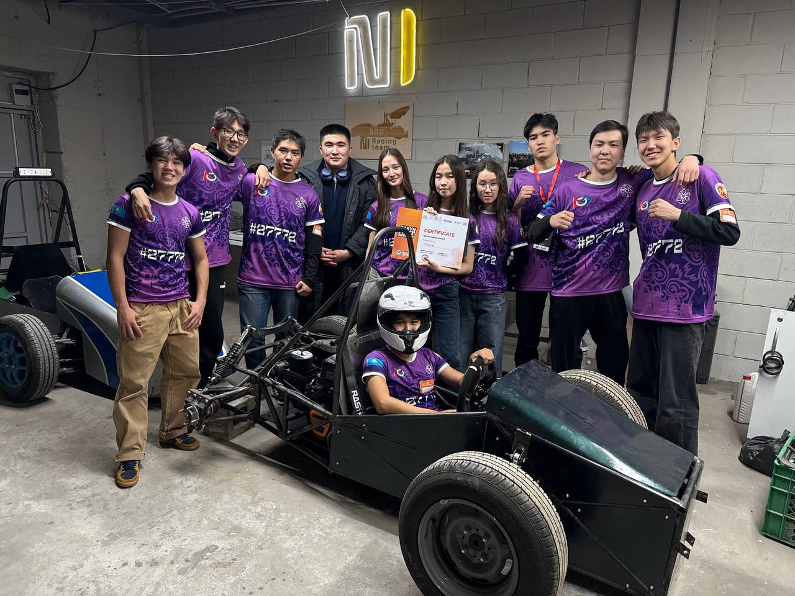
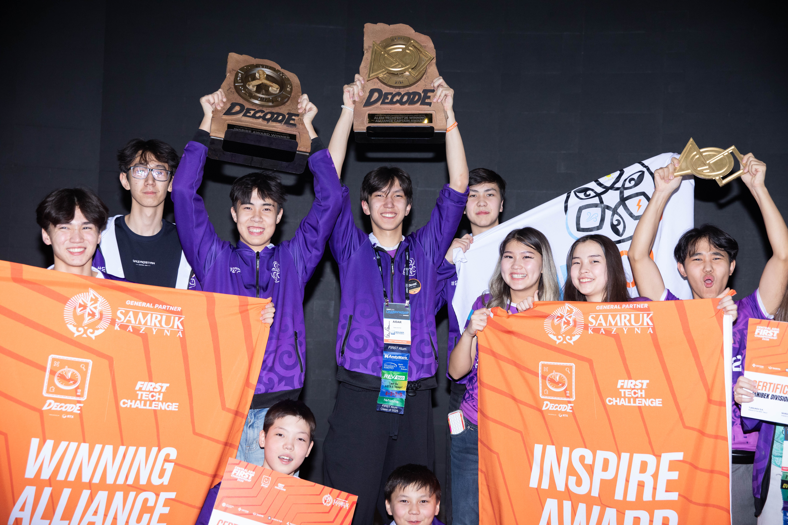
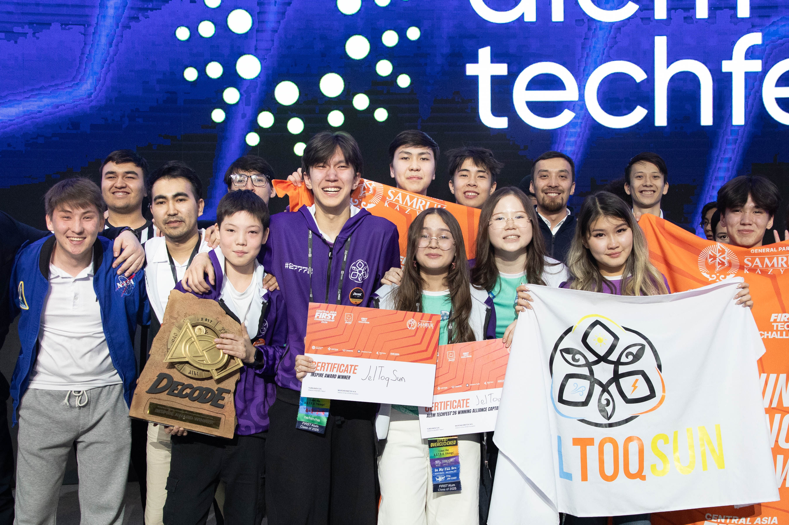
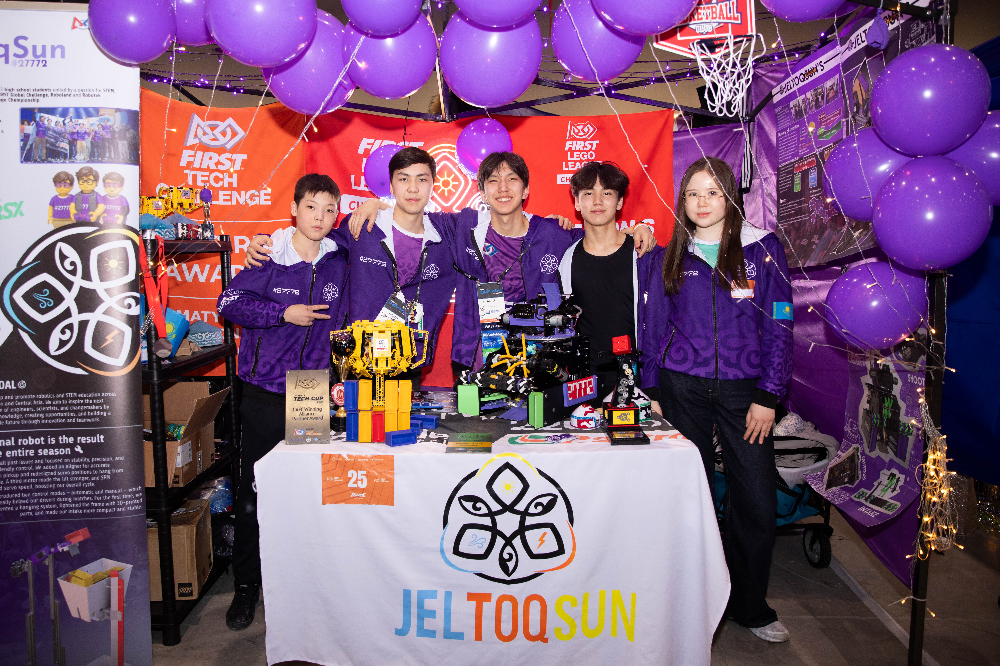
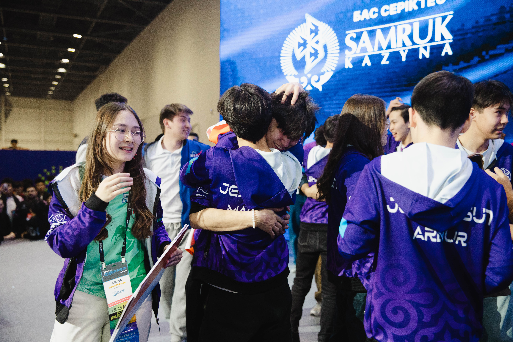
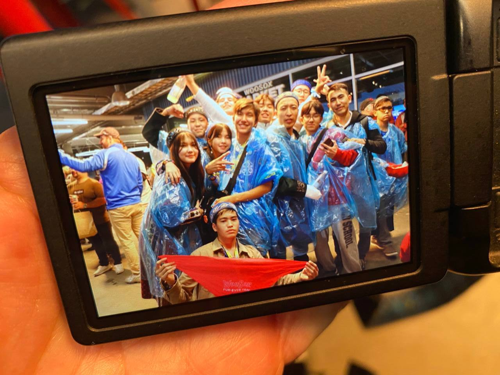
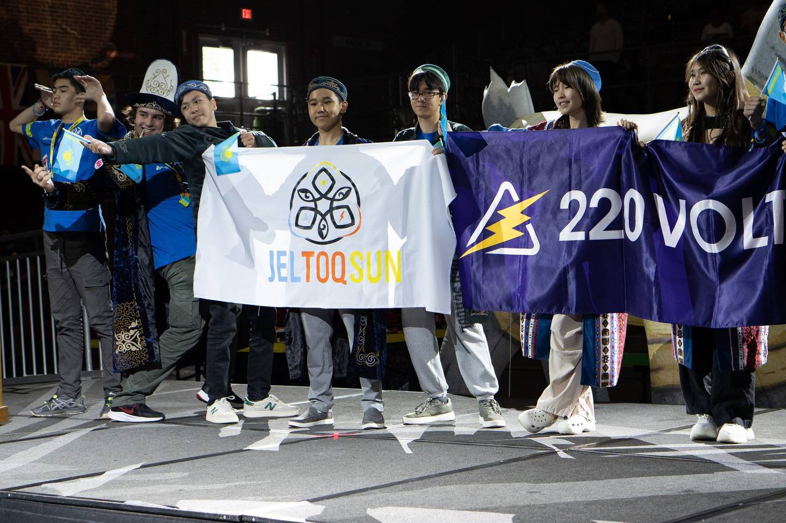
JelToqSun is more than a competition team. We work across robotics, outreach, mentoring, and educational resource creation to help more students enter and grow in FIRST.
12 students and 2 mentors working across technical and outreach directions.
Our team is student-led and role-based. Members contribute through programming, robot design, CAD, outreach, project work, presentations, and media.
We combine competitive robotics with real community growth.
We do not focus only on our own results. We also support schools, new teams, educational events, and public awareness of FIRST and STEM opportunities.
Engineering, innovation, mentoring, and team development.
We build robots, prepare for judging, improve strategy, develop projects, create resources, and share what we learn with others.
From our first steps in FIRST to building impact through projects, outreach, and global collaboration.
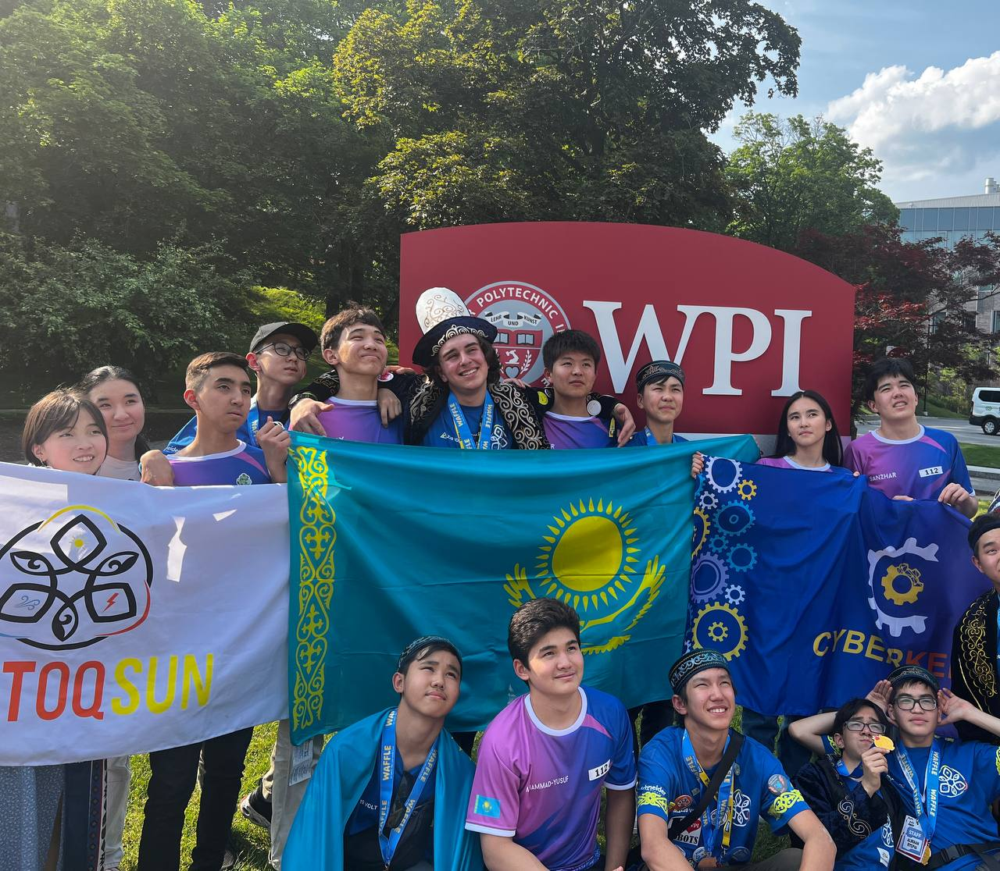
Our first experience with FIRST - first competitions, meeting new teams, building connections, and achieving our first wins.
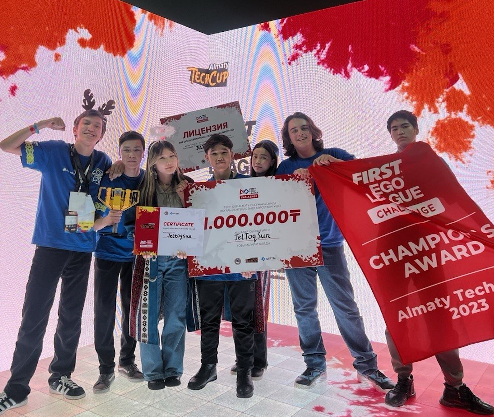
Deeper understanding of FIRST values, major challenges, and failures that pushed us to grow stronger.
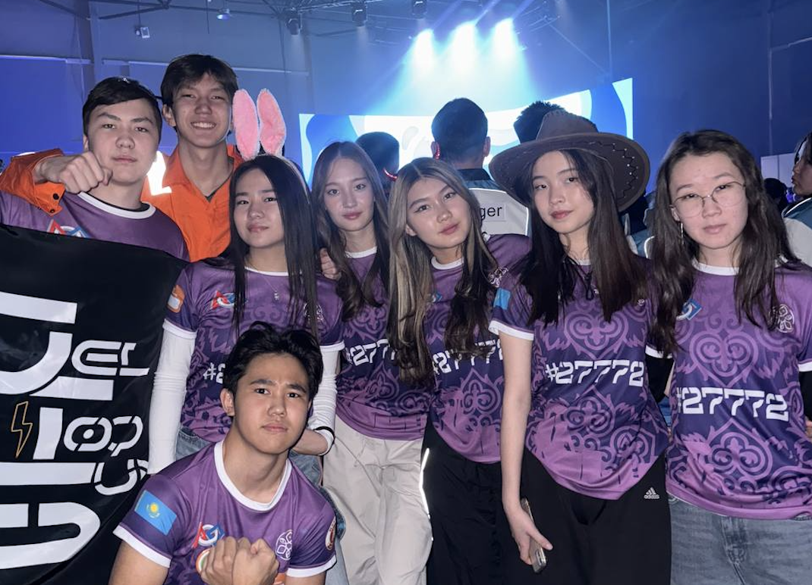
First steps in FTC, exploring the Inspire Award, and launching our first local outreach initiatives.
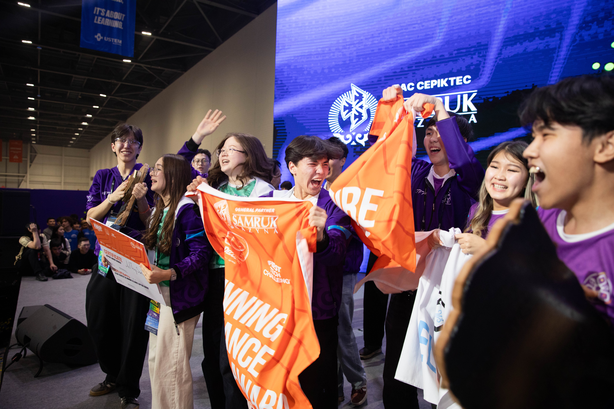
Learning from past mistakes, scaling our work, supporting other teams, and building our own impactful projects.
Our team works across outreach, education, mentoring, and community growth through FIRST.
We introduce students, teachers, and schools to FIRST, robotics, and team opportunities.
Example: Balkhash Seminar - 1 FTC team and 3 FLL-C teams were created.
We run training camps that help teams prepare through structure, practice, and shared experience.
Example: CHAMP’S CAMP - 19 FLL teams from 11 cities joined.
We support competition-style practice events where teams test strategy and experience real match pressure.
Example: Pre-Qualifier Scrimmage - 13 FTC teams practiced in a real event format.
We represent FIRST in public spaces and speak about its value to wider audiences.
Example: Official Conferences - we represented FIRST at national and regional conferences, introducing students to STEM and robotics.
We visit schools, hold master classes, and help students take their first step into robotics.
Example: Zhambyl School - 1 FTC team and 1 FLL team were created.
We build connections with universities, engineers, and international teams to learn and exchange experience.
Example: SDU University - we received engineering feedback on robot design.
We create our own initiatives that help teams grow beyond a single event or season.
Example: FIRST JTS Academy - an educational platform for students, teams, and mentors.
We run online sessions, reviews, and conferences to support teams from different cities and regions.
Example: PRE-CA Online Camp - 128+ participants joined before Central Asia.
We create useful materials, tools, and platforms that make FIRST more accessible.
Example: Join, Try, Share - a carefully curated and well-structured FTC resource hub that helps teams of any level navigate a huge amount of materials faster and more easily.
We also help events run from the inside by supporting competitions as volunteers and referees.
Example: Astana Qualifier - our team worked as referees and volunteers.